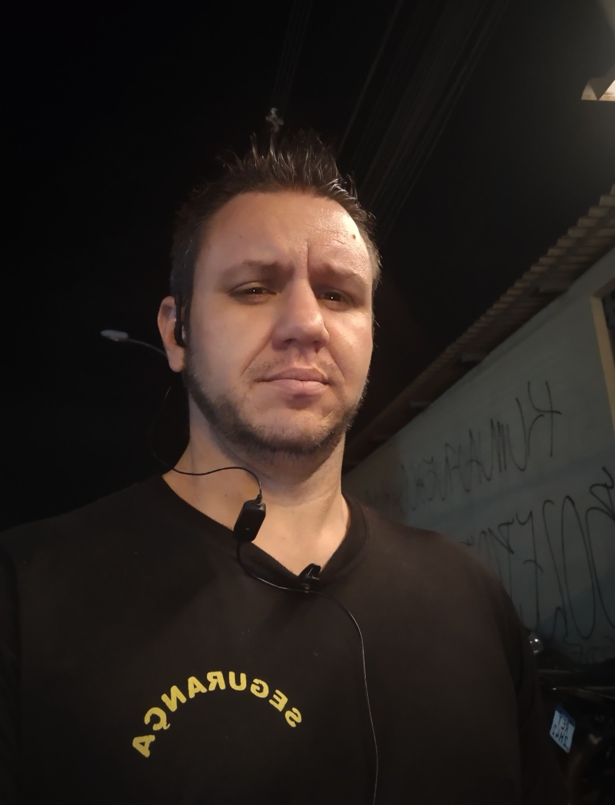

Conheça os profissionais que garantem segurança e excelência em cada evento.

Jofre Dogivan cardoso
Idade: 41 anos
Altura: 1,76m
Cursos: Vigilante, Combate Contra Incêndio, Primeiros Socorros

Marcos Pereira
Idade: 40 anos
Altura: 1,78m
Cursos: Segurança Patrimonial, Brigada de Incêndio

André Costa
Idade: 32 anos
Altura: 1,82m
Cursos: Controle de Acesso, Monitoramento